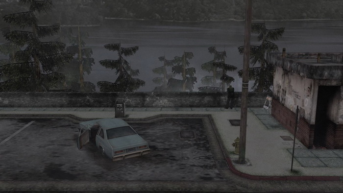
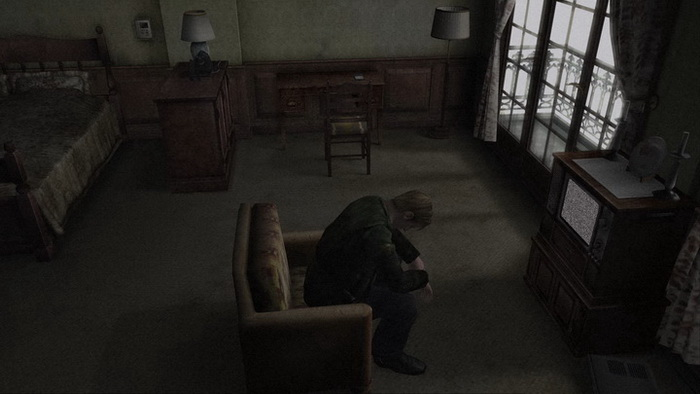
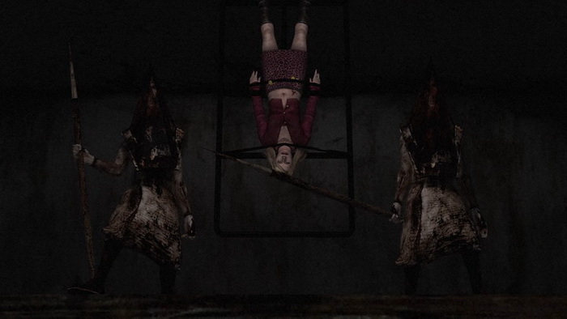

El infierno de James Sunderland
James Sunderland llega al pueblo de Silent Hill tras recibir una carta escrita por su esposa, Mary. El mensaje es breve pero inquietante: lo llama a “su lugar especial”, un rincón en aquel pueblo donde alguna vez fueron felices. Sin embargo, hay un detalle imposible de ignorar: Mary lleva muerta tres años.Movido por la confusión y la nostalgia, James emprende un viaje al corazón de un lugar cubierto por una niebla espesa, un silencio opresivo y una atmósfera que parece suspendida en el tiempo. Las calles están desiertas, la radio emite interferencias cuando algo se acerca, y las criaturas que lo acechan parecen haber surgido de pesadillas personales.
 En el camino conoce a Maria, una mujer casi idéntica a Mary, pero con una personalidad opuesta: seductora, libre, alegre. A pesar de la atracción que siente por ella, hay algo profundamente inquietante en su forma de aparecer y desaparecer, en cómo muere y regresa sin explicación. ¿Es real? ¿Es un fantasma? ¿Es un castigo?
James también se cruza con otros personajes: Angela, una joven emocionalmente devastada, cuya visión del pueblo está teñida por el fuego y la culpa; Eddie, un hombre paranoico que no soporta el juicio de los demás y se vuelve progresivamente más violento; y Laura, una niña que conoció a Mary en el hospital y parece ser la única que no ve monstruos en Silent Hill.
 Mientras más profundiza en los rincones del pueblo, James se sumerge también en los laberintos de su memoria. Silent Hill no es solo un escenario físico, sino un reflejo de su mente, una prisión hecha de recuerdos reprimidos, culpa y deseos no dichos. Cada criatura que lo persigue, cada pasillo distorsionado, parece haber sido generado por su propia psique.
Mientras más profundiza en los rincones del pueblo, James se sumerge también en los laberintos de su memoria. Silent Hill no es solo un escenario físico, sino un reflejo de su mente, una prisión hecha de recuerdos reprimidos, culpa y deseos no dichos. Cada criatura que lo persigue, cada pasillo distorsionado, parece haber sido generado por su propia psique.Entre las figuras más perturbadoras se encuentra Pyramid Head, un verdugo de rostro oculto que no lo ataca directamente, sino que lo sigue, juzga y lo obliga a enfrentar lo que no quiere ver. Este ser mata a Maria repetidas veces frente a él, como si repitiera un castigo inevitable que James aún no comprende del todo.
 La revelación llega cuando James recupera sus recuerdos: él mismo mató a Mary. Abrumado por años de sufrimiento, frustración y culpa, terminó con su vida en un momento de desesperación. Desde entonces, bloqueó el recuerdo y construyó una versión alternativa de los hechos, donde Mary había muerto de forma natural. Silent Hill, con su poder sobrenatural, lo confronta con la verdad que no puede seguir negando.
Maria no es más que una manifestación de su deseo, una imagen idealizada de Mary sin enfermedad ni dolor. Pyramid Head representa su necesidad inconsciente de castigo. Las criaturas, los pasillos, los sonidos y las repeticiones eternas son el reflejo de su mente intentando liberarse o hundirse.
 El desenlace depende de él. Puede aceptar su culpa y tratar de seguir adelante, hundirse en la negación y aferrarse a la ilusión de Maria, dejarse consumir por el remordimiento y morir, o incluso intentar revivir a Mary mediante rituales oscuros. Hay finales alternativos, y uno de ellos incluso sugiere que todo fue controlado por un perro en una cabina, como si el horror fuera demasiado para tomarlo en serio.
Silent Hill 2 no da una sola respuesta, porque cada una muestra un aspecto distinto del dolor humano. Es una historia de amor y muerte, de trauma y redención. Un descenso íntimo al infierno personal de un hombre que no supo cómo soportar la pérdida, y que tuvo que atravesar la niebla para poder ver con claridad.